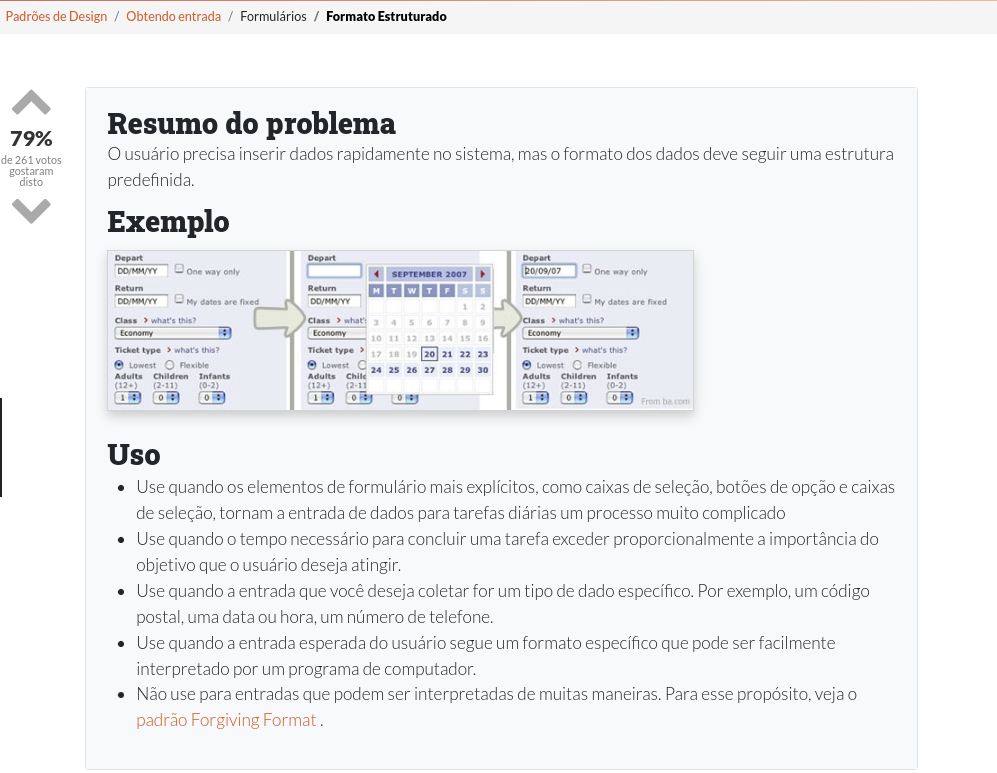
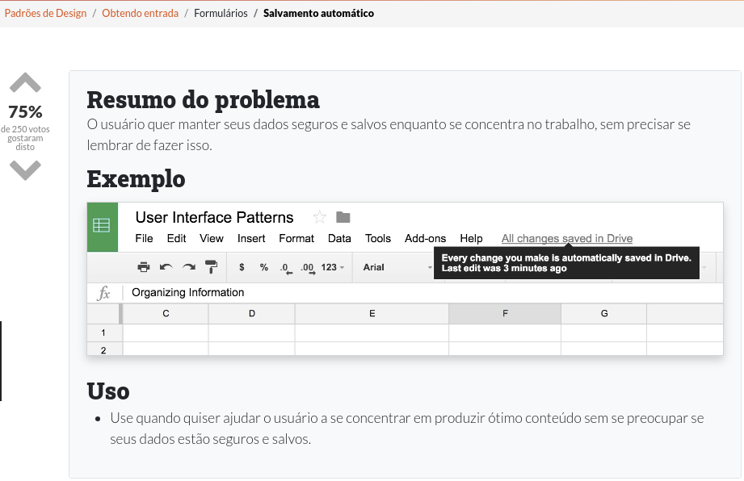
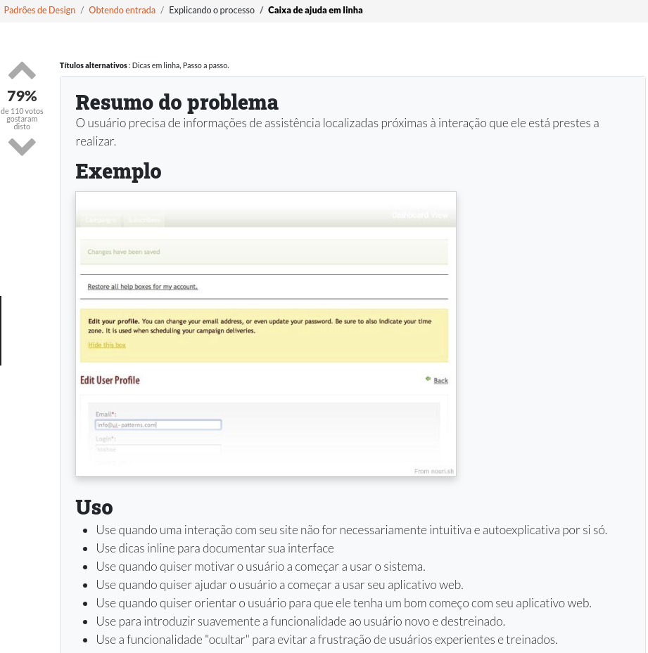
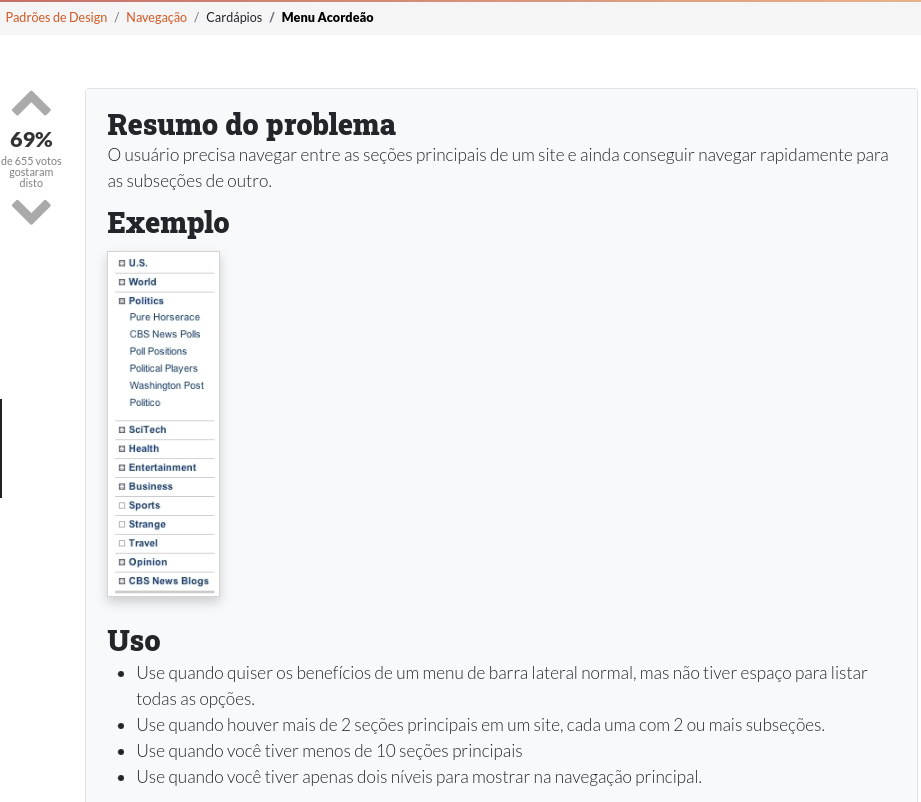
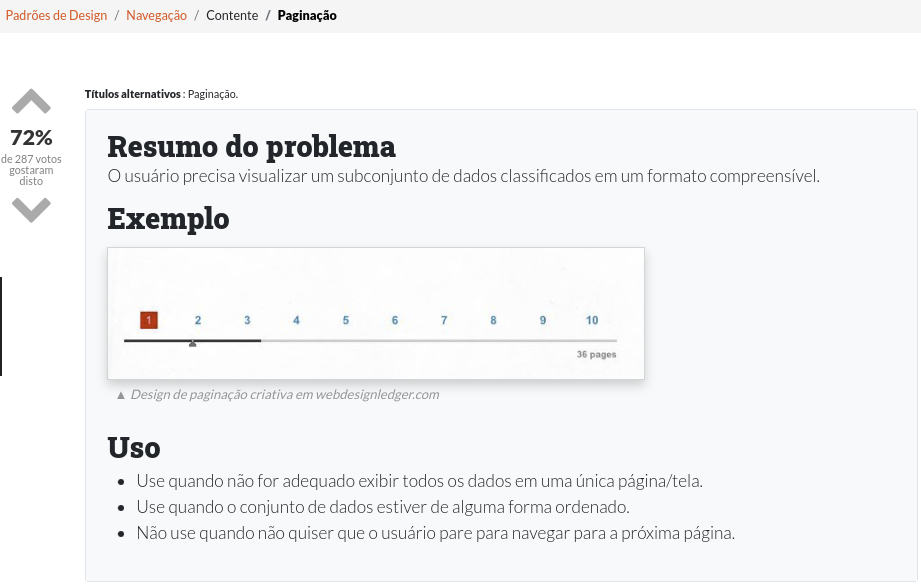
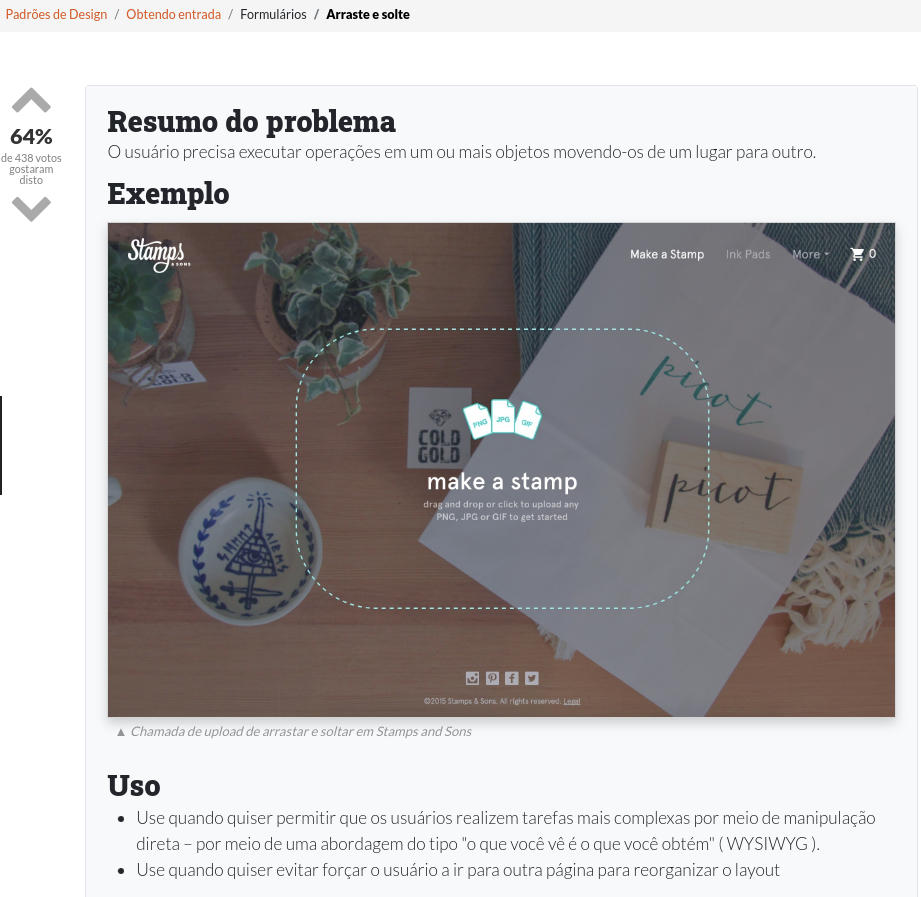
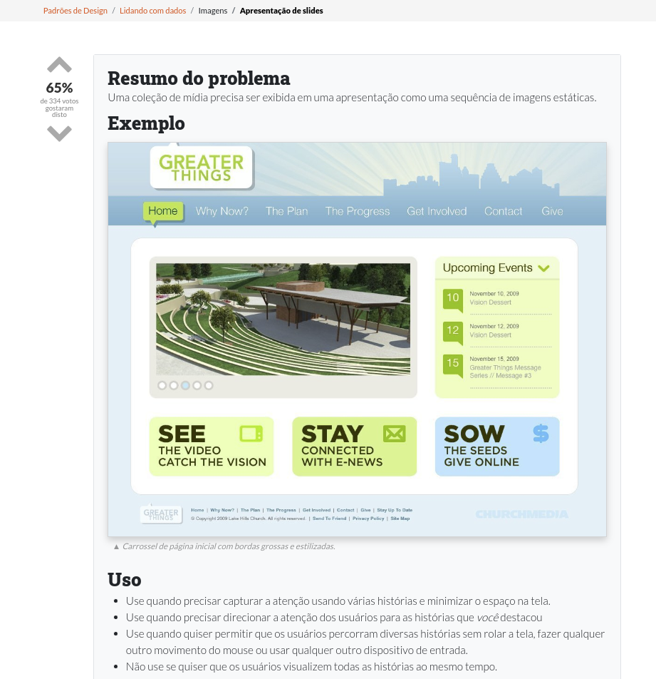
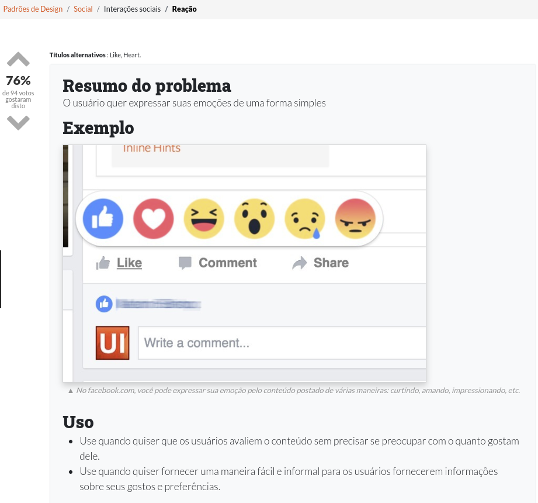
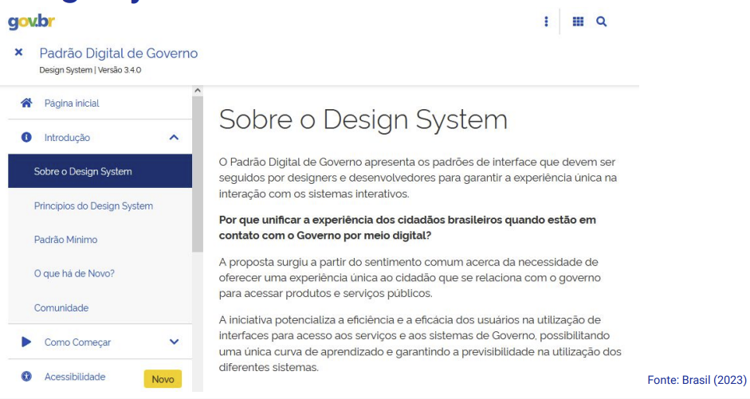

Disciplinas
INTERFACE HUMANO-COMPUTADOR-T01-2024-2 Concluído
Materiais
Vídeo 1 - [UFMS Digital] Interface Humano-computador - Módulo 4 - Unidade 1 sendProf.ª ministrante: Lucineide Rodrigues da Silva
Conteúdo
Padrões para interfaces Web e Mobile
Padrões de Design de IHC.
- Os design patterns são um conjunto de descrições de boas práticas para algum domínio;
- Porém:
- Não são solução pronta;
- Não são regras;
- Não são heurísticas;
- Não substituem a criatividade;
- Não garantem a qualidade do produto.
- Apoiam o designer a descobrir soluções já testadas e com bons resultados;
- Ajudam os usuários a reutilizarem conhecimento sobre como interagir com a interface;
- Devem ser adaptados conforme a necessidade do projeto.
- Alguns exemplos:
- Entrada de dados;
- Menus;
- Listagem de dados;
- Navegação;
- Tabelas;
- Buscas;
- Imagens;
- Interação social.
https://ui-patterns.com/patterns
Prompt de entrada (Input Prompt).

https://ui-patterns.com/patterns/InputPrompt
Formato Estruturado (Structured Format).
https://ui-patterns.com/patterns/StructuredFormat
Auto-save (Auto-save).
https://ui-patterns.com/patterns/autosave
Caixa de ajuda em linha (Inline Help Box).
https://ui-patterns.com/patterns/InlineHelpBox
Menu Acordeão (Accordion Menu).
https://ui-patterns.com/patterns/AccordionMenu
Paginação (Pagination).
https://ui-patterns.com/patterns/Pagination
Arraste e solte (drag-and-drop).
https://ui-patterns.com/patterns/drag-and-drop
Apresentação de Slides (Slideshow).
https://ui-patterns.com/patterns/Slideshow
Conquistas colecionáveis (Collectible Achievements).

https://ui-patterns.com/patterns/CollectibleAchievements
Reação (reaction).
https://ui-patterns.com/patterns/reaction
Persuasive Design Patterns.
Aversão à perda (Loss-aversion).- Nosso medo de perder nos motiva mais do que a perspectiva de ganhar algo de igual valor
- Se algo é promovido como escasso, nós o percebemos como mais desejável e mais valioso
- Nós desejamos mais quando somos provocados com uma pequena informação interessante
- Assumimos as ações dos outros em situações novas ou desconhecidas
Design System.
Coleção de diretrizes, de componentes, de padrões e de recursos de design criados e mantidos para garantir a consistência e a coesão na aparência e no comportamento de produtos ou serviços digitais.
Garante que todos os elementos de design em uma organização sigam os mesmos princípios e padrões, independentemente de quem os esteja criando.
Referências:
BARBOSA, Simone Diniz Junqueira; SILVA, Bruno Santana da. Interação Humano-Computador. Rio de Janeiro: Elsevier, 2010. Capítulo 8.
BRASIL. Padrão Digital de Governo: Design System. 2023. Disponível em: https://link.ufms.br/HjeQO. Acesso em: 31 ago. 2023.
UI Patterns. User Interface Design patterns. Disponível em: https://link.ufms.br/svEPF. Acesso em: 19 out. 2023.